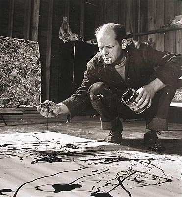

Tuesday, June the 15th, 2010
back to: title, date or indexes
Thanks to my son Ed, I have discovered just how easy it is to fritter away the hours here.

Should you find yourself spending far too long there, bear in mind, as I now do, these wise words from Peter De Vries, in The Prick Of Noon (1985): “I too believe in every kind of experimentation, freedom for the artist to shovel on reds and greens and oranges and purples in any quantity and as higgledy-piggledy as he wishes. But somewhere he's got to draw a line.”